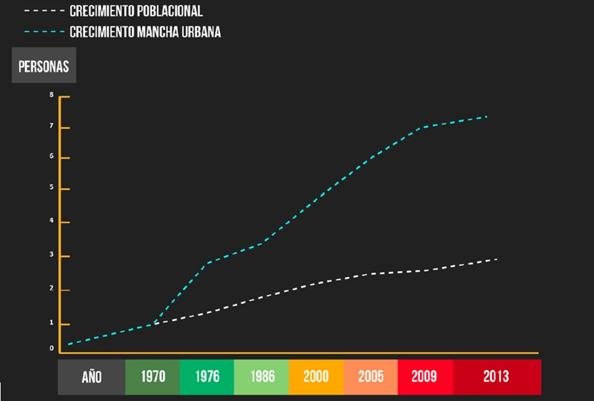
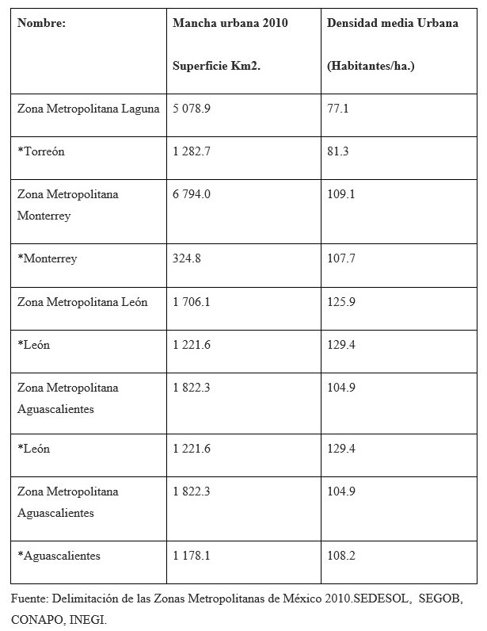
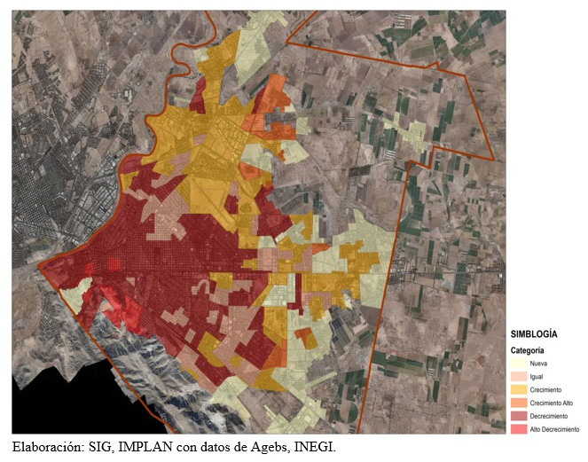

Torreón, camino a la redensificación
Por Arq. Teresita Benítez Saludado
28/08/2014
Hoy, más que nunca, el aprovechamiento y eficientización de los recursos e infraestructuras de las ciudades deben optimizarse en beneficio de la sociedad que las ocupa.
Una de las situaciones por las que la ciudad de Torreón, y en general, toda la Zona Metropolitana de la Laguna, busca una Planificación acorde a las políticas urbanas actuales y qué a nivel internacional se están promoviendo, se refiere a la expansión de ocupación de los Territorios urbanos y los problemas colaterales que provoca, donde se observa que el ritmo en la dinámica demográfica no corresponde al ritmo de expansión de la mancha urbana que ha crecido 7 veces, en comparación a la población que ha crecido solo 3 veces más desde 1970.
Gráfico estadístico de crecimiento poblacional vs ocupación expansiva del territorio:

En el caso de Torreón, ciudad con una historia de apenas 106 años, y una población estimada al año 2014 de 683,914 habitantes (CONAPO), se puede decir que no ha aprovechado su territorio e infraestructura contenida, de una manera óptima, debido a su baja densidad de ocupación en su área urbana.
Esto se refleja en la densidad poblacional general que tenemos, y que, comparativamente con otras ciudades del país es relativamente baja, por ejemplo:
Comparativa de densidades en Zonas Metropolitanas y densidad media urbana, según ciudad principal, año 2010:

La expansión de la ciudad provoca presión para la cobertura y mantenimiento de la infraestructura y servicios públicos, a su vez que el vaciamiento de amplios sectores de la mancha urbana, repercute en la cohesión comunitaria. Esto se ilustra al revisar que el 40 % de las 312 Áreas Geo estadísticas Básicas (AGEBS) urbanas que delimita el INEGI para el municipio de Torreón sufrieron un decrecimiento de su población entre 2005 y 2010.
La imagen superior nos ilustra sobre la situación de expansión de mancha urbana y las densificaciones que ocupan los sectores de la ciudad.
El Plan Director de Desarrollo Urbano de Torreón, publicado en el periódico oficial en el mes de febrero del presente año, propone como prioridad, la re densificación del centro de la ciudad, promoviendo a través de políticas de mejoramiento y regeneración los polígonos de actuación detectados dentro de la zona central de la ciudad, polígonos que cuentan con infraestructura básica, tienen cercanía con equipamientos educativos, recreacionales, comerciales, administrativos, etc., y que tienen capacidad para incrementar y así optimizar en uso la infraestructura albergada en sitio, y no continuar dispersando injustificadamente la ciudad.